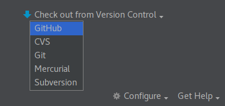
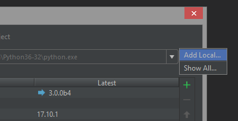
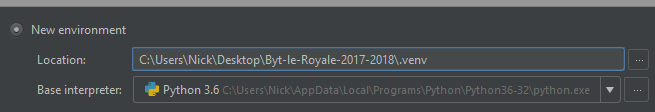
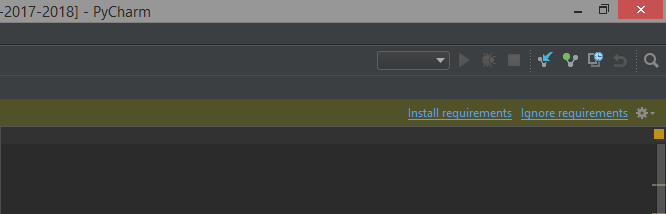
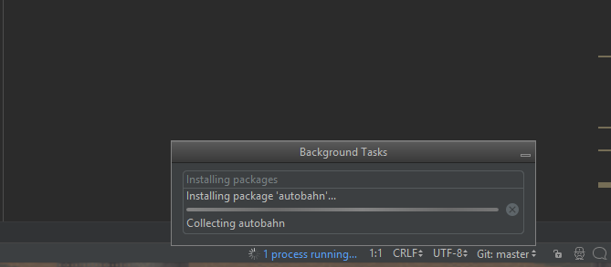
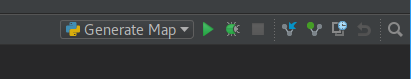

Installing¶
Note: The game has not been tested on MacOS. Linux or Windows are recommended.
Recommended Install (Windows & Linux)¶
- Install Pycharm Community Edition.
- Start Pycharm.

- Click “Checkout from version control and then git.
 - Now we will clone the github repository. This copys the remote code repository to your local machine.
- Fill in fields
- Git Repository URL:
https://github.com/jghibiki/Byte-le-Royale-2018 - Parent Directory: Use the
...to select where you would like to download the code to. - Directory Name:
Byte-le Royale
- Git Repository URL:
- Click
Clone

- Fill in fields
- Now we need to set up a virtual environment for PyCharm. A virtual environment is a sandbox for installing python libraries.
- Click File -> Settings
- In the settings window, click on the triangle next to
Project: Byte-le ...and then clickProject Interpreter

- Click on the gear icon, then click on
Add Local

 - In the window that appears, rename the
venvdirectory to.venv. This will help prevent git from attempting to track changes to this python virtual environment.

- Now that we have set up a virtual environment, we need to install the python libraries required for the game.
- To do this, go to the file browser on the left, and open the
custom_client.pyfile in the root of the repository. In the top right corner of the file you should see the following bar pop up after a few seconds.  - Click on install requirements, and click Ok/Install Requirements on the window that pops up.
- In the lower right corner you should see a progress bar pop up. When this bar reaches 100% the python requirements have been installed successfully. 
- To do this, go to the file browser on the left, and open the
- Now that we have set up a virtual environment, we need to set the working directory for some helper scripts.
- Select
Edit Configurationsfrom the dropdown menu in the upper right corner of the main menu.

- In the new window, for each script listed on the left, click on the
...next to the text box forWorking Directoryand navigate to the root of the repository, then click apply.

- Select
- To verify that everything is working, select
Generate Mapfrom the dropdown list in the upper right corner of the main window. Then click the green arrow next to the dropdown to run the script. A panel should pop up displaying the output of the script.


Manual Install¶
Windows¶
Note: This installation method is not recommended. The PyCharm installation will be much easier to use and provides the benefit of the PyCharm Debugger.
- Install Python 3.6: Download Python 3.6 or newer from the Python Official Website
- Install the Github Client
- Using the Github Client clone the game repository
https://github.com/jghibiki/Byte-le-Royale-2018.git
- Using a Windows Command Prompt, change directory to where you clone the repository.
- As a shortcut, browse to the directory using Windows Explorer, and hold shift while right clicking in the folder. This will add an option to the context menu that says “Open Command Propmt Here”. Click this button to open a command prompt in this directory.
- In the command prompt type the following to install game requirements.
pip install -r requirements.txt
Linux¶
Note: This installation method is not recommended. The PyCharm installation will be much easier to use and provides the benefit of the PyCharm Debugger.
- Install Python 3.6 via your distro’s package manager.
- Clone the repository
git clone https://github.com/jghibiki/Byte-le-Royale-2018.git
- Change directory into the repository and run
pip install -r requirements.txt